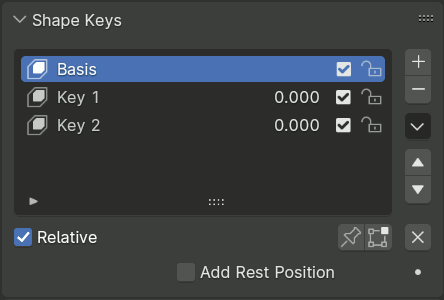
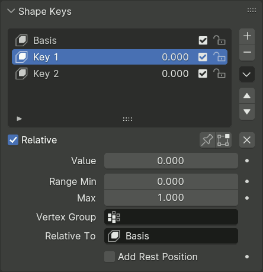
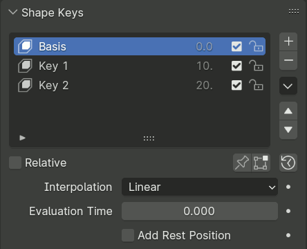
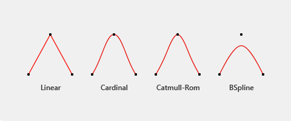

Panel Shape Keys¶
Tham khảo
- Editor:
Properties
- Mode:
All modes
- Panel:


Panel Shape Keys.¶
Panel Shape Keys dùng để tạo, sắp xếp và quản lý các shape key. Panel này trình bày một Tree View trong đó các shape key có thể được sắp xếp lại bằng cách nhấp-kéo.
Thành phần Shape Key
- Value/Frame (số)
Ở chế độ Relative: Value là mức ảnh hưởng hiện tại của shape key, dùng để pha trộn giữa shape (giá trị=1.0) và reference key của nó (giá trị=0.0). Reference key thường là hình Basis. Trọng số của phép pha trộn có thể được ngoại suy vượt trên 1.0 và dưới 0.0.
Ở chế độ Absolute: Value là Evaluation Time mà tại đó shape sẽ có mức ảnh hưởng tối đa.
- / Mute
Nếu bỏ chọn, shape key sẽ không được tính đến khi trộn chồng shape key thành kết quả hiển thị trong 3D Viewport.
- / Lock Shape
Shape key có thể bị khóa để bảo vệ khỏi việc chỉnh sửa ngoài ý muốn do chọn nhầm key trong danh sách để chỉnh sửa. Phần lớn các operator và công cụ sculpt cũng như edit mode thông thường có di chuyển vertex sẽ hủy với một lỗi nếu shape key đang hoạt động bị khóa.
Ghi chú
Các operator luôn sửa mọi shape key theo cùng một cách, như Apply Object Transforms, không kiểm tra khóa shape key. Phần lớn các operator edit mode sửa topology hiện cũng không kiểm tra, vì thông thường topology được hoàn tất trước khi tạo shape key.
- Shape Key Specials
- New Combined
Thêm một shape key mới với hình dạng biến đổi hiện tại của object. Điều này khác với nút của danh sách, vì nút đó luôn sao chép hình Basis bất kể mức trộn hiện tại.
- Duplicate
Tạo một bản sao của shape key đang hoạt động.
- New from Objects
Thêm vị trí các vertex của các object được chọn làm shape key mới, hoặc cập nhật các shape key hiện có trùng tên.
Cách dùng: chọn (các) object để sao chép dữ liệu shape từ đó, rồi chọn object đích để sao chép dữ liệu shape sang, sau đó thực hiện thao tác.
- New from Objects Flipped
Tạo shape key mới từ các object được chọn đồng thời đối xứng hóa vị trí vertex qua trục X cục bộ. Điều này thường được dùng khi tạo các shape key đối xứng (ví dụ: tạo shape Left Smile từ shape Right Smile).
Thao tác này đòi hỏi topology của tất cả mesh liên quan phải khớp nhau.
- Update from Objects
Cập nhật các shape key hiện có của object đang hoạt động bằng vị trí vertex của các object được chọn có shape key trùng tên.
Cách dùng: chọn (các) object để cập nhật dữ liệu shape từ đó, rồi chọn object đích để cập nhật vào, sau đó thực hiện thao tác.
- Update from Objects Flipped
Tương tự Update from Objects, nhưng áp dụng bản cập nhật đối xứng qua trục X cục bộ. Hữu ích khi cập nhật các shape key đối xứng khi làm việc với geometry đối xứng hoặc các shape chỉnh tư thế.
- Flip
Nếu mesh của bạn đối xứng, trong Object Mode bạn có thể đối xứng hóa các shape key theo trục X.
Thao tác này sẽ không hoạt động trừ khi các vertex của mesh đối xứng hoàn toàn. Hãy dùng công cụ trong Edit Mode.
- Flip (Topology)
Giống như Mirror Shape Key, nhưng nó xác định các vertex đối xứng dựa trên topology của mesh. Các vertex của mesh không cần đối xứng hoàn toàn để thao tác này hoạt động.
- Make Basis
Biến shape key được chọn thành shape key Basis mới. Vị trí vertex của shape key đang hoạt động được áp vào mesh gốc, và mọi shape key khác được điều chỉnh tương đối so với basis mới này.
Thao tác này hữu ích khi một shape key chỉnh hình hoặc đã chỉnh sửa cần trở thành hình dạng mặc định của mesh thay cho basis gốc.
- Apply to Basis
Áp phép biến đổi của shape key được chọn vào shape key Basis. Shape key được chọn sau đó bị xóa.
Kết quả trở thành một phần của hình mesh gốc, và các shape key còn lại được tính toán lại tương đối so với basis đã cập nhật.
- Apply All
Áp hình đang được đánh giá (hiển thị) hiện tại vào dữ liệu mesh và xóa tất cả shape key.
- Delete All
Xóa tất cả Shape Key cùng mọi ảnh hưởng của chúng lên mesh.
- Relative
Đặt các shape key thành Relative hoặc Absolute. Xem Shape Key Relative hoặc Absolute.
- Shape Key Lock (biểu tượng ghim)
Hiển thị shape đang hoạt động trong 3D Viewport mà không pha trộn. Shape Key Lock tự động được bật khi object ở Edit Mode.
- Shape Key Edit Mode (biểu tượng edit mode)
Nếu bật, khi vào Edit Mode, shape key đang hoạt động sẽ không nhận mức ảnh hưởng tối đa như mặc định. Thay vào đó, mức pha trộn shape key hiện tại sẽ hiển thị và có thể được chỉnh sửa từ trạng thái đó.
- Add Rest Position
Tạo một Attribute trong miền vertex tên là
rest_position, là bản sao của attributepositiontrước khi shape key và modifier được đánh giá. Chỉ object kiểu mesh mới hỗ trợ tùy chọn này.
Shape Key Relative¶


Các tùy chọn của Shape Key Relative.¶
Xem Shape Key Relative hoặc Absolute.
Với shape key relative, giá trị hiển thị cho từng shape trong danh sách biểu thị trọng số hay mức ảnh hưởng hiện tại của shape đó trong mức Mix hiện tại.
- (Clear Shape Keys)
Đặt mọi giá trị ảnh hưởng, tức trọng số, về 0. Hữu ích để nhanh chóng đảm bảo kết quả hiển thị trong 3D Viewport không bị ảnh hưởng bởi các shape.
- Value
Trọng số của phép pha trộn giữa shape key và reference key của nó (thường là hình Basis).
Giá trị 0.0 biểu thị 100% ảnh hưởng của reference key, và 1.0 là của shape key.
- Range
Khoảng tối thiểu và tối đa cho giá trị ảnh hưởng của shape key đang hoạt động. Blender có thể ngoại suy kết quả khi Value xuống dưới 0.0 hoặc vượt trên 1.0.
- Vertex Group
Giới hạn phép biến đổi của shape key đang hoạt động trong một vertex group. Hữu ích để phân tách một shape phức tạp thành các thành phần, bằng cách gán các vertex group tạm cho shape phức tạp rồi sao chép kết quả vào các shape mới đơn giản hơn.
- Relative To
Chọn shape key để biến đổi từ đó. Khóa này được gọi là Reference Key của shape đó.
Ghi chú
Thay vì lưu trực tiếp các offset, về mặt nội bộ các key relative được lưu dưới dạng ảnh chụp hình dạng mesh. Các offset biến đổi relative được tính bằng cách lấy ảnh chụp đó trừ đi Reference Key.
Vì vậy, việc thay thế Reference Key có tác dụng trừ đi phần chênh lệch giữa reference mới và cũ khỏi phép biến đổi relative của key hiện tại.
Shape Key Absolute¶


Các tùy chọn của Shape Key Absolute.¶
Xem Shape Key Relative hoặc Absolute.
Với shape key absolute, giá trị hiển thị cho từng shape trong danh sách biểu thị Evaluation Time mà tại đó shape key đó sẽ hoạt động.
- Re-Time Shape Keys (biểu tượng đồng hồ)
Các shape key absolute được định thời theo thứ tự trong danh sách, với khoảng cách không đổi. Nút này đặt lại thời gian cho các key. Hữu ích khi các key đã bị xóa hoặc sắp xếp lại.
- Interpolation
Điều khiển nội suy giữa các shape key.
Linear, Cardinal, Catmull-Rom, B-Spline

Các kiểu nội suy khác nhau.¶
Đường màu đỏ biểu thị các giá trị nội suy giữa các key (các chấm đen).
- Evaluation Time
Điều khiển mức ảnh hưởng của shape key. Kéo thời gian line (scrub) để xem hiệu quả của cấu hình hiện tại. Thông thường, thuộc tính này được key cho animation hoặc được điều khiển bằng driver.